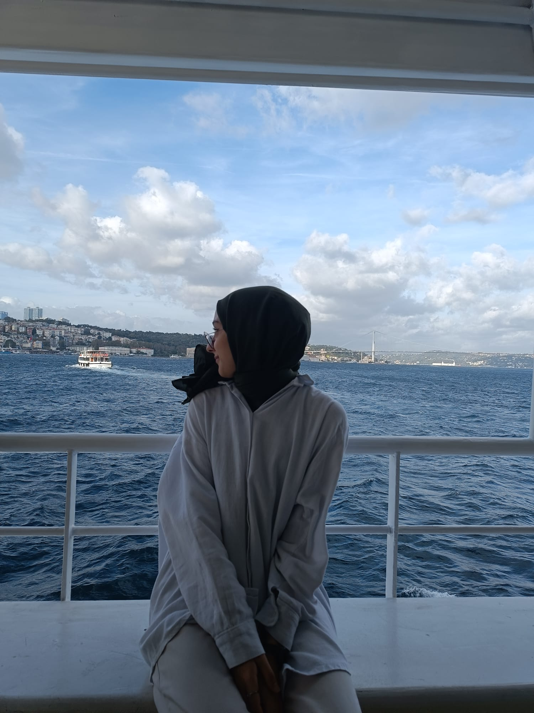
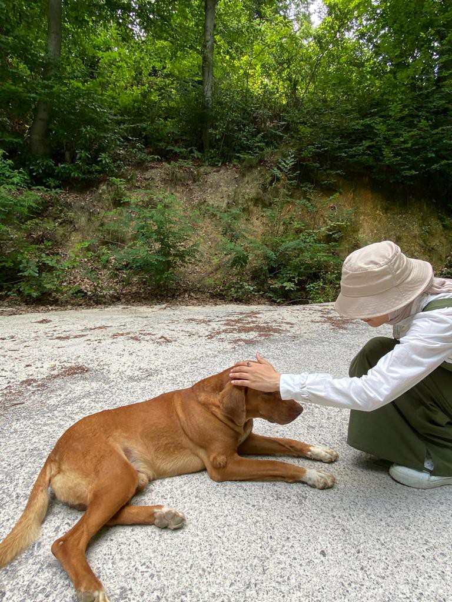
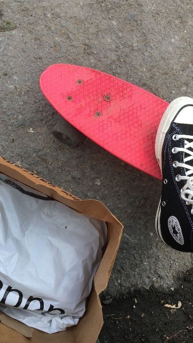
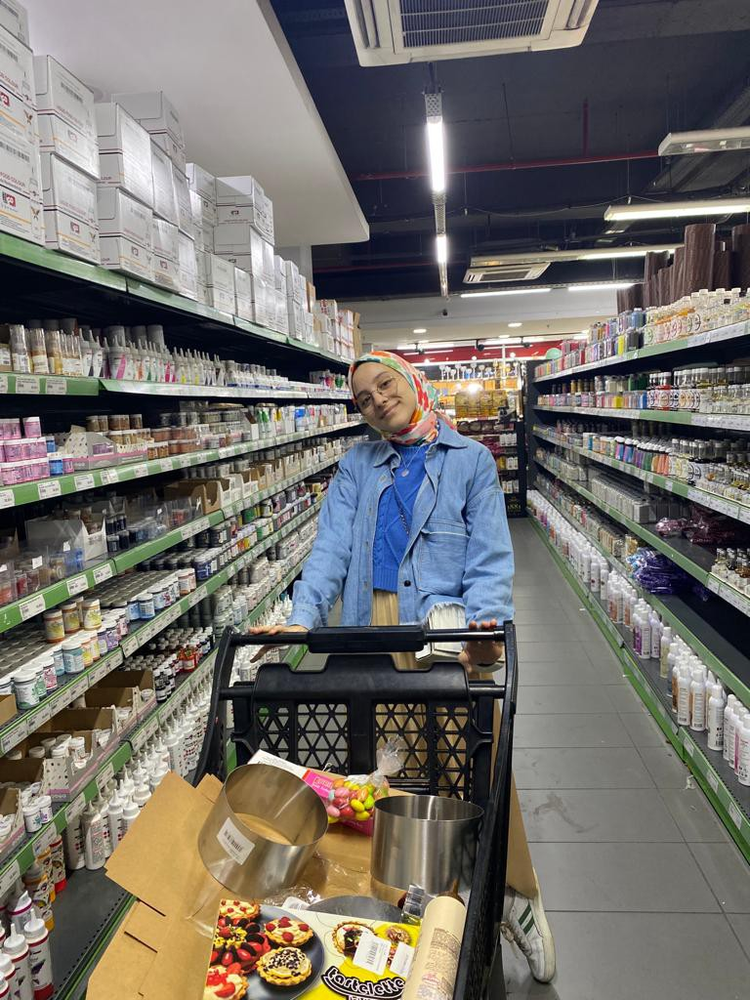
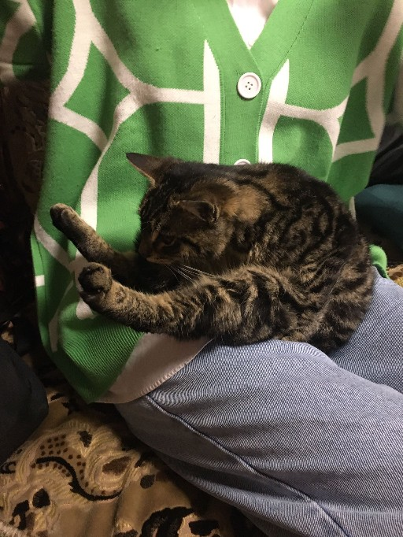
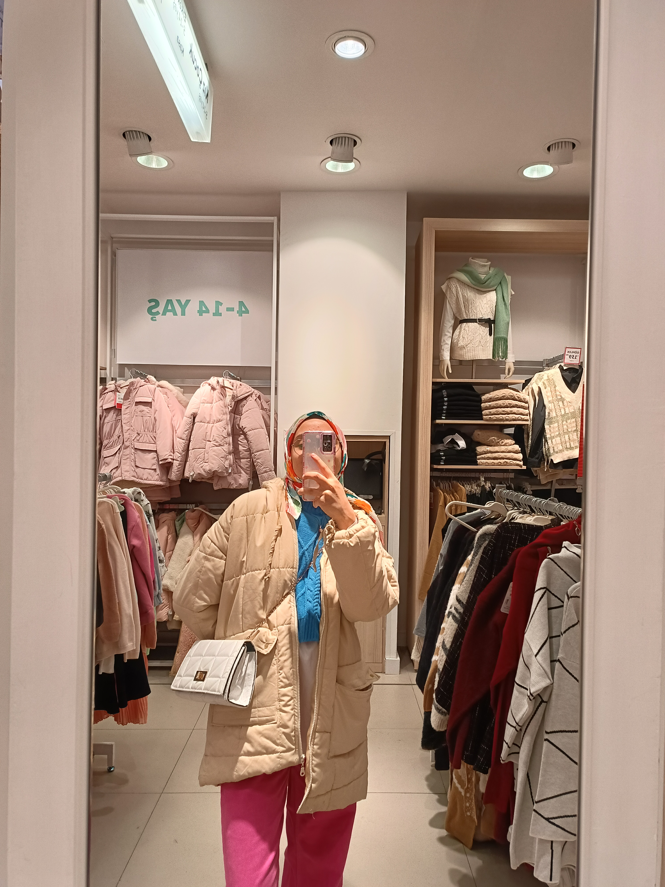
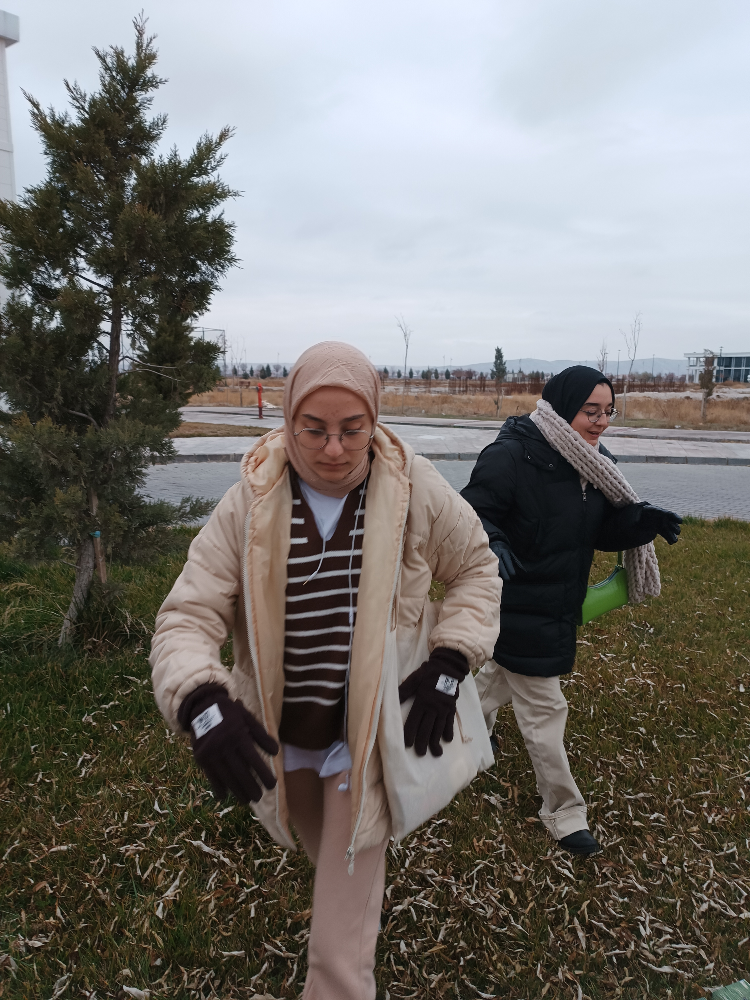
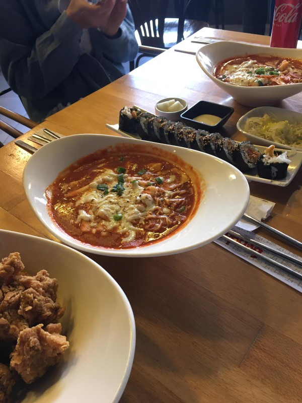
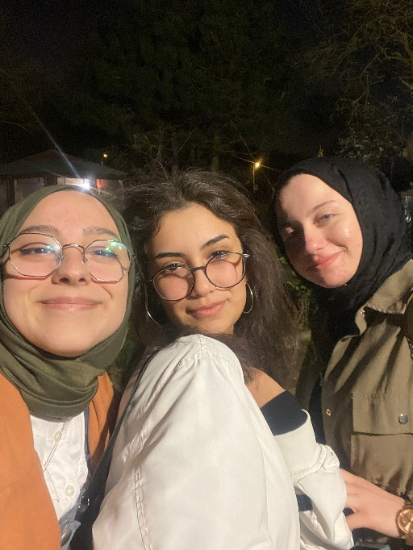

İstanbul'da Keşfedilmeyi Bekleyen Eşsiz Güzellikler: Gizli Cennetin Anahtarı
İstanbul, tarih boyunca pek çok medeniyetin izlerini taşıyan büyüleyici bir şehir. Her
köşesi, farklı bir hikaye anlatıyor ve ziyaretçilerine eşsiz deneyimler sunuyor. Turistik
yerlerin ötesine geçmeyi ve gerçek İstanbul'u keşfetmeyi istiyorsanız, işte
listeniz:

Kariye Müzesi (Chora Kilisesi)
İstanbul'da pek çok ünlü müze bulunsa da, Kariye Müzesi sıklıkla gözden kaçan bir hazine.
Mozaikleri ve freskleriyle ünlü bu kilise, Bizans sanatının muazzam bir örneği.
Balat Sokakları
Renkli evleri, sanat galerileri ve butik kafeleriyle ünlü Balat, İstanbul'un en eski
semtlerinden biridir. Burada rastgele sokaklarda kaybolmak, gizli bahçeleri ve duvarlardaki
sanat eserlerini keşfetmek unutulmaz bir deneyim sunar.
Pierre Loti Tepesi
Şehrin gürültüsünden uzaklaşıp muhteşem bir Boğaz manzarasıyla huzurlu bir an yaşamak
istiyorsanız, Pierre Loti Tepesi tam size göre. Gün batımında burada oturup çay içmek,
İstanbul'u farklı bir perspektiften görmek için harika bir fırsat.
Fener Rum Erkek Lisesi
İstanbul'un tarihini ve kültürünü derinlemesine keşfetmek istiyorsanız, Fener Rum Erkek
Lisesi'ni ziyaret etmelisiniz. Muazzam mimarisi ve tarihi atmosferi ile sizi geçmişe
götürecek.
İstanbul, sadece tarihi yapıları ve turistik mekanlarıyla değil, aynı zamanda sokakları,
insanları ve gizli köşeleriyle de büyüleyici bir şehir. Bu yerleri keşfederken, kendi
unutulmaz anılarınızı yaratmayı unutmayın!
Umarım bu öneri, İstanbul'da keşfedilecek ilginç yerlere dair bir blog yazısı için ilham
verici olur!
Aşk ve Gurur: Jane Austen'in Zekice Dokunuşları
Merhaba Kitapseverler!
"Aşk ve Gurur," Jane Austen'in klasikleşmiş eserlerinden biridir ve sadece bir aşk hikayesi
değil, aynı zamanda toplumsal normlara dair keskin bir gözlem sunar.
Aşkın Dansı: Elizabeth ve Darcy
Eser, Elizabeth Bennet ve Mr. Darcy'nin karşıtlıklarla dolu aşk hikayesine odaklanır. Austen,
aşkın yanı sıra toplumsal sınıfları, gelenekleri ve önyargıyı da inceler.
Toplumsal Eleştiri: Evlilik ve Sınıf
"Aşk ve Gurur," evlilik kurumunu sorgular ve toplumsal normlara eleştirel bir bakış sunar.
Austen, karakterleri aracılığıyla sınıfsal ayrımların ve evlilik beklentilerinin insan
ilişkilerini nasıl etkilediğini gösterir.
Üslup ve Mizah: Austen'in Dokunuşu
Jane Austen'in dil zarafeti ve mizah anlayışı, eserini klasikleştiren unsurlardan biridir.
Roman, zekice kurgulanmış diyaloglar ve incelikli espriyle okuyucuya keyifli bir deneyim sunar.
Sonuç: Aşk ve Gururun Ebedi Dansı
"Aşk ve Gurur," aşkın ve toplumsal ilişkilerin karmaşıklığını anlamak isteyenler için kısa ama
etkileyici bir yolculuk sunar. Jane Austen'in eseri, insan doğasının derinliklerine inen ve aynı
zamanda esprili bir üslupla dokunan unutulmaz bir hikayeyi içerir.
Kodlar Arasında, Kareler İçinde: Yazılım Mühendisi Bir Gencin Renkli Dünyası





Merhaba! Ben, yirmi yaşında, yazılım mühendisliği öğrencisi ve aynı zamanda renkli bir
dünyanın içinde yaşayan bir influencerım. Yazılım dünyasının karmaşıklığına rağmen, bu
alanda zorlanmaktan ziyade büyük bir keyif alıyorum. Bilgisayar ekranı karşısında
geçirdiğim
saatler beni her zaman yeni bir şeyler öğrenmeye ve keşfetmeye teşvik ediyor.
Ancak hayat sadece kodlarla sınırlı değil, değil mi? Benim renkli dünyam, sokakları,
insanları, anıları fotoğraflarla ölümsüzleştirmekten geçiyor. Fotoğraf çekmek ve
Instagram'da paylaşmak, benim için sadece bir hobi değil, aynı zamanda bir sanat ve
ifade
biçimi. Ancak kalabalığın içinde kaybolmak yerine, içindeki çekirdek bir topluluğa sahip
olmak benim tercihim. Çünkü içten bağlar, samimi paylaşımlar ve gerçek ilişkiler, benim
için
her zaman sayıdan daha önemli oldu.
Yazılım dünyasının karmaşıklığını renklerle, kodları karelerle birleştiren bir genç kız
olarak, her günümü bilgisayar başında geçirirken aynı zamanda dışarıda renkli anılara
şahit
oluyorum. Bu blog, hem yazılım mühendisliği maceralarımı hem de renkli dünyamdaki
güzellikleri sizinle paylaşmak için bir araç. Sadece bir bilgisayar ekranının ardında
değil,
aynı zamanda sokaklarda, kafelerde ve doğanın kucağında da yaşayan bir genç kızın
hikayesi.
Bana katılın, kodlar arasında gezinirken renkli dünyamda bir yolculuğa çıkın. Belki de
beni
takip edenler arasında yeni arkadaşlıklar kurarız. Kim bilir, belki de sizin de renkli
dünyanız benimkine benzer bir ton barındırıyor. Haydi, bu renkli yolculuğa birlikte
çıkalım!


